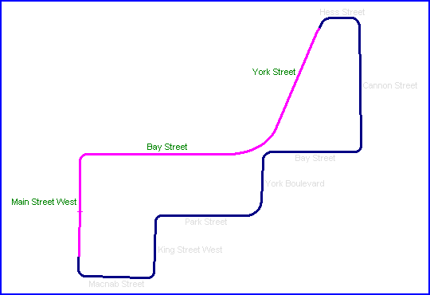

| Pos | # | Driver | Nat | Chassis | ||||
| 1 | 4 | K.Rosberg | Chevron B45 | |||||
| 2 | 22 | P.Cobb | March 78B | |||||
| 3 | 2 | B.Rahal | Ralt RT-1 | |||||
| 4 | 34 | D.Sullivan | March 78B | |||||
| 5 | 6 | D.Galica | Chevron B39 | |||||
| 6 | 31 | C.Mead | Chevron B39 | |||||
| etc... | ||||||||
Hamilton, Canada
Type: Street Circuit
Length: 1.300 Miles // 2.092 km
Used: August 1978
Photographs Taken: June 2003
This temporary street circuit at Hamilton in Ontario was used just once in 1978, featuring the sixth round of the CASC Formula Atlantic Championship on the 7th August. The race quickly desended into a farce when the insurance company demanded that the metal containers that formed part of the portable barrier system be filled with sand. In the haste to get this done in time, sand was also dumped all over the road! The resulting delay led to the whole event being run in just half a day. Following 30 minutes of practice, a shortened qualifying session was held for 48 minutes, although there was basically only one line due to the sand still lying on the circuit.
Finally, at 8pm the race itself was started! It was obvious that the scheduled 70 lap distance would not be covered. Well, obvious to everyone except Rosberg who simply flew! Ten laps in, a three car shunt slowed the field behind the pace car, but thereafter Rosberg was unseen by the rest of the pack. The race was eventually red flagged after 39 laps due to darkness. The final results on track were as follows:
Pos # Driver Nat Chassis 1 4 K.Rosberg Chevron B45 2 22 P.Cobb March 78B 3 2 B.Rahal Ralt RT-1 4 34 D.Sullivan March 78B 5 6 D.Galica Chevron B39 6 31 C.Mead Chevron B39 etc...
In the 1980's the Copps Coliseum was built over a section of Park Street, however the remainder of the circuit is still accessable. Nowadays, cycle races are held on the Main Street straight.

Click on street names below to view photographs of that section.
|| Contents | Main to York | Hess to Bay | York to Macnab || Home ||
Photographs kindly supplied by Chris Mann. Reproduced here with kind permission.